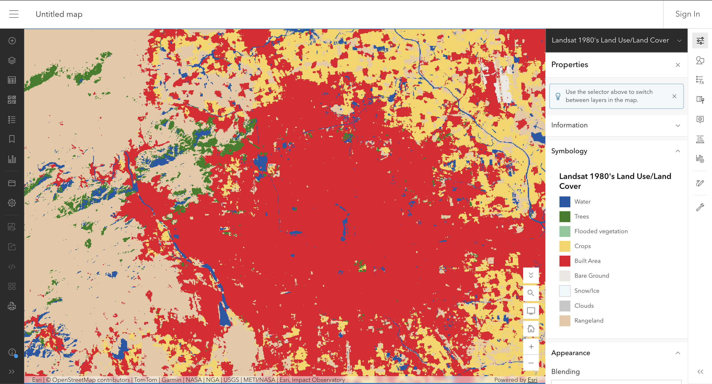
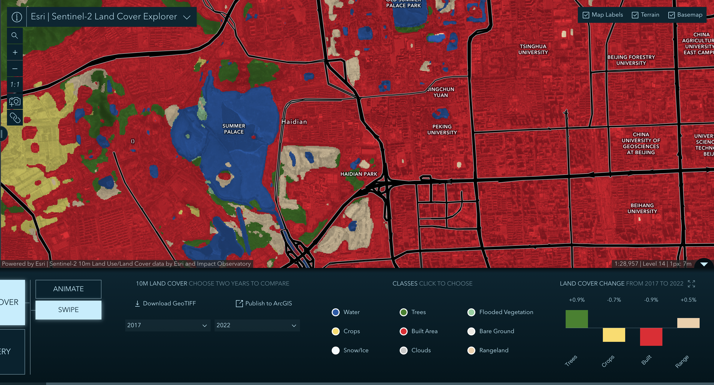
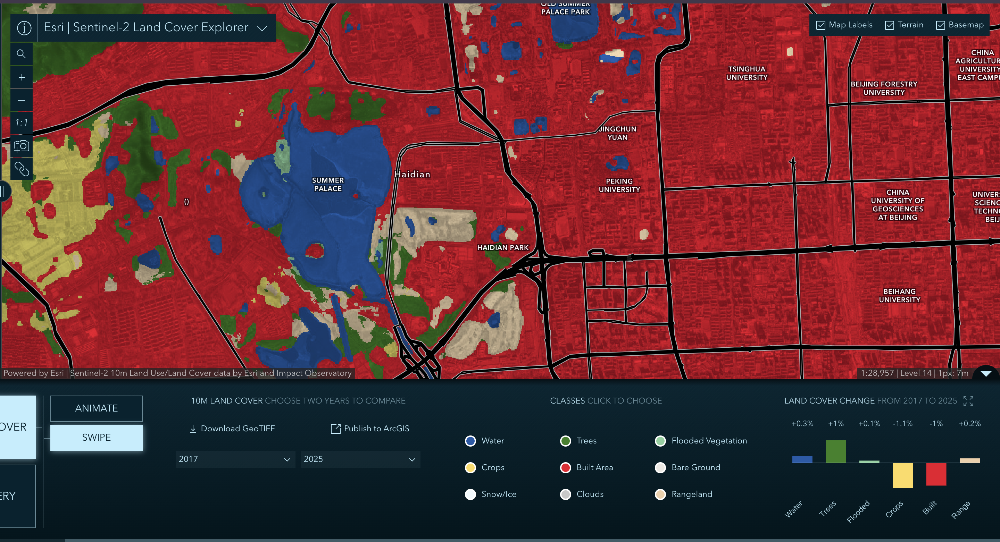
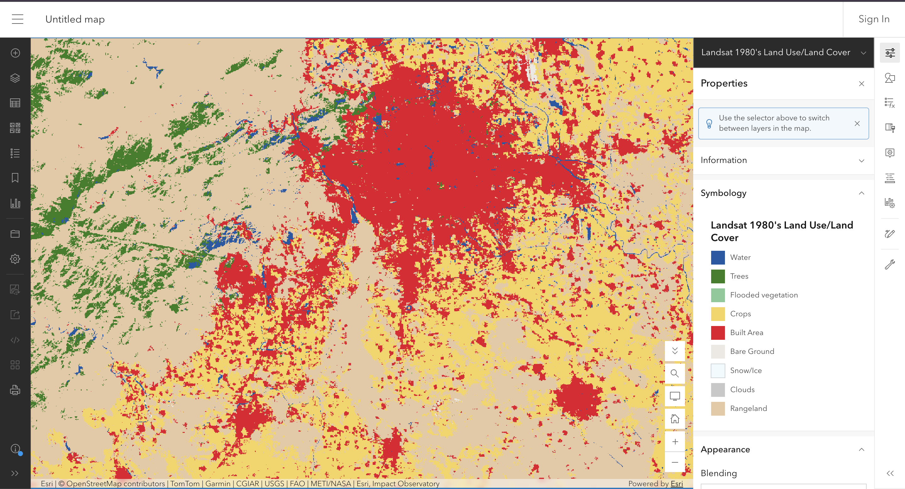
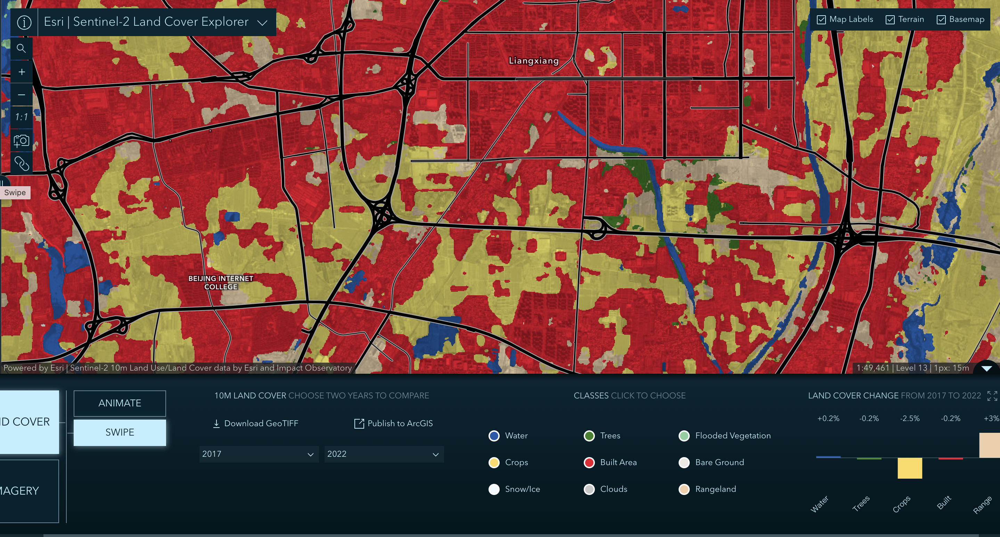
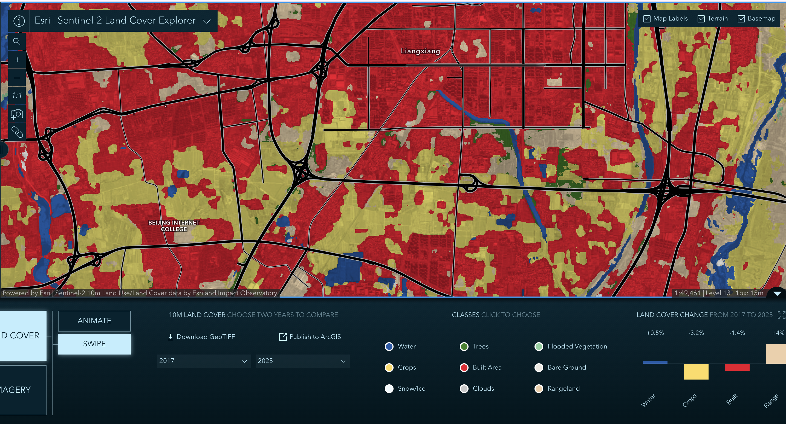

The question
What was the land at my site used for before it was used for this, and what did it become? The pattern and distribution of built areas reveal hidden assumptions inside the classifier.
The data
Sentinel-2 10m Land Use/Land Cover Time Series: Esri and Impact Observatory. 10m resolution. Chosen years: 2017, 2022, and 2025. Licence: Esri Master License Agreement with source data under CC BY 4.0.
Landsat 1980's Land Use/Land Cover: Esri and Impact Observatory. 30m resolution, a single composite for 1984–1992. Licence: Esri Master License Agreement (no CC BY clause).
The method
Held constant in Part 1: Extent, scale (1 px : 7 m in Haidian, 1 px : 15 m in Liangxiang), rendering (same 9 classes), and instrument (Sentinel-2).
Not held constant in Part 3: The sensor changed (Landsat 5 to Sentinel-2), the resolution changed (30m to 10m), and the time window changed (a 9-year composite 1984–1992 vs. a single year). These differences matter for the changes I am claiming.
I used the Land Cover Explorer Swipe tool for modern comparisons. To test the "third date" effect, I compared 2017-2022 against 2017-2025. For Part 3, I opened the Landsat 1980s layer in Map Viewer using the provided link.
App Link: Open the Land Cover Explorer.
The evidence
Haidian (My Site)



Liangxiang (Rapid Urbanization)



What I found
1. Expectation. I expected to see massive changes from cropland to city in the suburbs. The maps confirm this in Liangxiang, but at Haidian, the 1980s map already showed significant built-up area.
2. The comparison and the third date. In Liangxiang, the 2017-2022 panel shows Crops -2.5% and Built +3%. But the 2017-2025 panel shows Crops -3.2% and Built +4%. The story (farmland turning into city) survives, but the magnitude of change depends heavily on which end date you pick. A two-date swipe hides the messy reality of pixels wandering between classes.
3. The category blind spot. At the Summer Palace, the dense, ancient trees are classified as Built Area (red). As stated in the product's description, "yards, parks, and groves will appear as built area rather than trees." This is a stated property of the list, not a genuine error.
4. The validation gap. The validation report states that agreement with six reference products ranges from 61% to 81%. But not one of the six references covers China; the nearest is Vietnam at 61%. For my site, I do not know the error rate at all.
5. A surprising co-increase. Looking at Haidian (Figures 2 & 3), between 2017 and 2025, Trees increased (+1%) while Built Area decreased (-1.1%). Beijing's urban greening policies are physically visible in the data. However, the classifier counts these urban parks as "Built Area" by definition, so green infrastructure is paradoxically hidden inside the built class.
What this does not show
Proxy sentence: I am using the land cover classes at my site to stand for what is actually on the ground, and it might fail because the classifier's class boundary defines urban parks and groves as Built Area (meaning my green space cannot appear as 'Trees' in the data), and because of mixed pixels (the site's trees are narrower than the 10m resolution, so they are averaged into whatever surrounds them).
It also does not show a validated classification for my region: the 1980s product's six reference sets do not cover China, so the agreement scores say nothing about the error rate at my Haidian site.
AI-usage disclosure
AI-assisted for tidying the HTML and checking structure, using DeepSeek. I verified it by opening the page on a phone and a laptop. The comparison, the third-date check, the class my site cannot express and the proxy sentence are my own.
Personal reflections have been submitted privately in Brightspace.